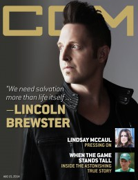

CCM Digital, 15 Aug 2014
| Cover |
|---|
|  |
 Online Exclusively Online Exclusively |
| Writers in this Issue |
| Argyrakis, Andy Aspinwall, Grace S. Conner, Matt Ehrenzeller, Andrew Greer, Andrew Lusk, Caroline Saraco, Bert |
Lincoln Brewster
Cover Feature:- "Breathe Deep: Survival Is Just The Beginning" by Caroline Lusk
- "Child of Promise" by Andrew EhrenzellerAndrew Ehrenzeller (injury and recovery)
- "Step By Step" by Caroline Lusk
- "Three to One: Chanel Hayes Goes Solo" by Andrew Greer
- "When The Game Stands Tall: When Love and Perfect Effort Collide" by Caroline LuskCoach Bob Ladouceur
- "A Life Well Lived" by Caroline Lusk
- Bellarive - Before There Was by Grace S. Aspinwall
- David Dunn - Crystal Clear EP by Matt Conner
- Anita Wilson - Vintage Worship by Andrew Greer
- various artists - The Action Bible Remixed by Grace S. Aspinwall
- various artists - Gotee Records: Twenty Years Brand New by Andy Argyrakis
- Forevermore - Telos by Matt Conner
- Shauna Marie - He Heals the Broken EP by Matt Conner
- Ian Yates - DNA by Matt Conner
- Adia - Behind Enemy Lines by Andrew Greer
- Chanel Hayes - Trin-i-tee 5:7: According to Chanel by Andrew Greer
- Ray Price - Beauty Is... The Final Sessions by Andy Argyrakis
- Brent Bourgeois - Don't Look Back by Bert Saraco
- "Summerstage 2014, Calvary Church, Orland Park, IL" by Andy Argyrakis
- "Celebrating Grace, Embracing Redemption" by Caroline Lusk
Relevant Links
For more information about CCM Digital visit .This issue is available exclusively online.
© 2011 CMnexus. Last updated September 2019. Contact: editor -AT- cmnexus -DØT- org About